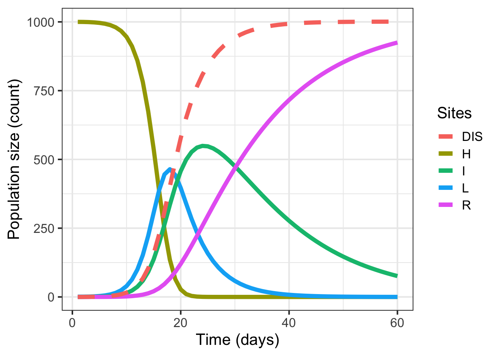

library(tidyverse) # essential packages
library(cowplot) # for themes
library(deSolve)
theme_set(theme_bw(base_size = 16)) # set global theme7 Simulation
This is a work in progress that is currently undergoing heavy technical editing and copy-editing
7.1 HLIR function
HLIR_fun <- function(t, y, par) {
# Variables
H <- y[1]
L <- y[2]
I <- y[3]
R <- y[4]
beta <- par$beta
gama <- par$gama
mu <- par$mu
# Right hand side of the model
dH <- -beta * H * I
dL <- beta * H * I - gama * L
dI <- gama * L - mu * I
dR <- mu * I
return(list(c(dH, dL, dI, dR)))
}7.2 Setting up
# Set up parameters
beta <- 0.002 # Per capita rate of infection of susceptible hosts
gama <- 1 / 5 # Rate at which exposed (i.e., latently infected) hosts become infectious
delta <- 15 # infectious period
mu <- 1 / delta
InitCond <- c(1000, 1, 0, 0)7.3 Solving equation
steps <- seq(1, 60, by = 1)
parms <- list(beta = beta, gama = gama, mu = mu)
HLIR <- ode(InitCond, steps, HLIR_fun, parms)
epidemics <- data.frame(time = HLIR[, 1], H = HLIR[, 2], L = HLIR[, 3], I = HLIR[, 4], R = HLIR[, 5])7.4 Visualizing HLIR output
library(ggthemes)
Attaching package: 'ggthemes'The following object is masked from 'package:cowplot':
theme_mapp1 <- epidemics %>%
ggplot() +
geom_line(aes(time, H, color = "H"), size = 2) +
geom_line(aes(time, L, color = "L"), size = 2) +
geom_line(aes(time, I, color = "I"), size = 2) +
geom_line(aes(time, R, color = "R"), size = 2) +
geom_line(aes(time, I+R, color = "DIS"), size =2, linetype = 2)+
labs(y = "Population size (count)", x = "Time (days)", color = "Sites")
p1